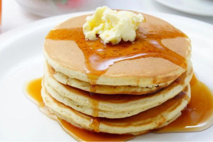

Panqueca Americana
Ingredientes
- 1 xícara de farinha de trigo
- 2 colheres de sopa de açúcar
- 1 colher de sopa de fermento em pó
- 1 pitada de sal
- 1 xícara de leite
- 1 ovo
- 2 colheres de sopa de manteiga derretida
- Manteiga adicional para untar a frigideira
Modo de Preparo
- Em uma tigela, misture a farinha, o açúcar, o fermento e o sal.
- Em outra tigela, misture o leite, o ovo e a manteiga derretida.
- Despeje a mistura líquida sobre a mistura seca e mexa levemente, apenas até combinar (a massa deve ficar um pouco grossa e com alguns grumos).
- Aqueça uma frigideira antiaderente em fogo médio e unte com um pouco de manteiga.
- Coloque uma concha pequena de massa e cozinhe até aparecerem bolhas na superfície.
- Vire com cuidado e cozinhe o outro lado até dourar.
- Repita o processo até terminar a massa.
- Sirva com mel, xarope de bordo (maple syrup), manteiga ou frutas.